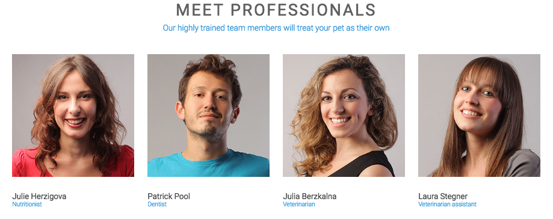

Featured Component - Header

What I hope to learn
This particular header seemed a bit more advanced at first glance but I figured it would be good practice. The main questions I had were about the eCommerce cart and the search icon. As far as the search icon goes, I feel like that can be achieved with a form that is hidden and pops up once clicked. The eCommerce I feel is much more complicated then that and is something I really would like to learn more about. As if those two things weren't hard enough, I then have to worry about the logo and how to float the main navigation.
How this relates to what I have/will learn in WDD
The main header of any website is the map to your entire site. It is the user is going to navigate through your site.
How might I build this?
Create the component as a header
Add a logo that floats to the left.
Add a navigation that contains an unordered list.
Style Guide
Color: #547abb, #333
Fonts: Montserrat, sans-serif
View Component
2. Feature Section
What I hope to learn
What I hope to practice and learn is how to correctly float each section. On top of floating the sections I want to make sure each one takes up 50% of the container it is in.
How this relates to what I have/will learn in WDD
Sections like the image above are good ways to show users some features the company or website offers. Many sites that I visit have sections similar to this and they help quickly convey information to the user.
View Component
3. Overlapping Image
What I hope to learn
I feel like this component here could be considered a call to action but I wasn't completely positive. One of the main things I wanted to focus on while building this was the image that overlapped the sections. This is a look I've wanted to create for some time and I thought it would be good to learn.
How this relates to what I have/will learn in WDD
When I cropped this component from the original site I noticed that it was towards the bottom. This stuck out to me and was another reason I chose to build it because I think it's a good idea to have a CTA to be one of the first thing users see and also the last thing they see.
View Component
3. Meet Our Team

What I hope to learn
Having a meet our team or about us section is always a good idea but working with images can sometimes be tricky. When I saw this I quickly wanted to learn how to evenly space out the images and the content that goes with it to fit on one row and also how to correctly size the images and make them responsive.
How this relates to what I have/will learn in WDD
Adding this type of content helps make your site more personable and allows to user to relate to the team members of said company.
View Component

What I hope to learn
This footer looked rather interesting when I first saw it. It wasn't your typical one line footer but rather seemed to have multiple navigations and also a logo. A footer may seem simple enough to make but in this case you have to make sure to give the proper width to each section and possibly float them so they can line up correctly. There are many factors that have to be considered.
How this relates to what I have/will learn in WDD
Footers are essential to any website and like the main header of any website allows the users to have direct access to information. Maybe information that wasn't as important or couldn't fit in the main navigation could be placed in the footer.
View Component